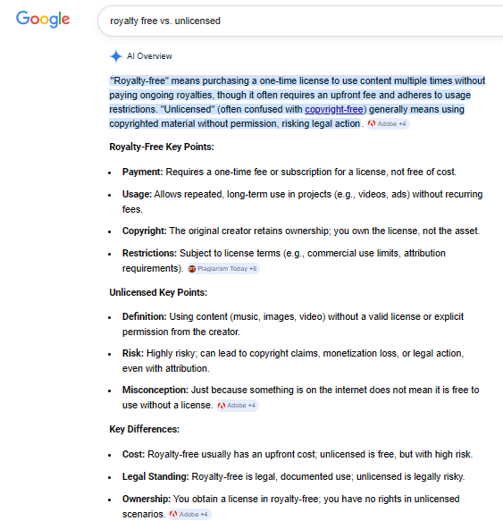

I was a small, thin, socially naïve honkey
walking through some rough 'hoods,
poor, lonely, sometimes aimless and curious,
never once
feeling the need for a gun.
You should often do the exact opposite of what they tell you to do.
You should often be the exact opposite of how they tell you to be.
And sometimes their advice is mostly just meant for them.
Do you ever wonder where India and China put all those people?
When I was a young adult, I wanted to be independently wealthy. Five minutes later, I re-decided on independent poverty. Was it the easier way? Now I'm 55, still living in poverty.
"Gettin' crazy on the waltzers,
but it's the life that I choose,
Yeah, sing about the sixblade,
sing about the switchback
and a torture tattoo,"
"Her CD changer's full of singers that are mad at their dad,"
still trying to figure this out:

still trying to figure out the "zoom" coding, too!
"Never doubt that a small group of thoughtful, committed citizens can change the world; indeed, it's the only thing that ever has."
~ Margaret Mead
It's the classic social pattern: The gang refuses to give up and the victim (who usually doesn't mind using a religious metaphor) says,
"God bless you disgusting men who study my ass!"
(For me, this happened a long time ago.)